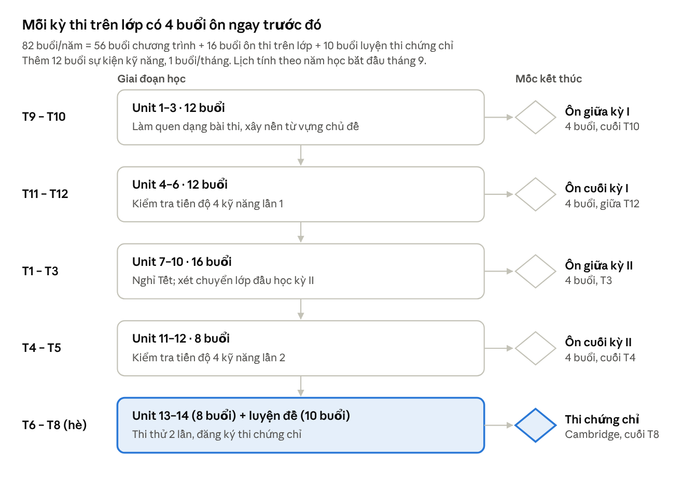

IVY – Curriculum Tiếng Anh THCS theo CEFR
1. Tổng quan và giả định thiết kế
Chương trình gồm 5 cấp độ (Foundation → Advanced), mỗi cấp nâng khoảng một bậc CEFR. Học sinh học 2 buổi/tuần tại trung tâm và làm bài tập 25–40 phút mỗi ngày tại nhà. Lớp được xếp theo hồ sơ năng lực 4 kỹ năng, không theo khối lớp.
Giả định (file định hướng chưa nêu, cần trung tâm xác nhận):
Mỗi buổi học 90 phút; năm học khoảng 41 tuần học thực tế.
Học sinh lớp 6–9 (11–15 tuổi), lớp 8–15 học viên như quy định hiện hành.
Giáo trình là bộ Cambridge cho lứa tuổi THCS; khung dưới đây viết theo năng lực nên ghép được với bất kỳ bộ sách nào trong dòng này.
Năm học bắt đầu tháng 9, khớp lịch thi giữa kỳ, cuối kỳ của các trường THCS.
Nguyên tắc thiết kế:
Thời gian trên lớp dành cho phần cần giáo viên: nói, viết, sửa lỗi, tương tác nhóm. Phần ghi nhớ từ vựng, nghe ngấm, luyện ngữ pháp chuyển về nhà.
Hai buổi trong tuần khép một vòng: buổi 1 tiếp nhận (Nghe – Đọc), buổi 2 tạo sản phẩm (Nói – Viết).
Lớp học theo năng lực, nhưng phần ôn thi trên lớp được chia theo khối, vì mỗi khối có đề cương riêng.
Mỗi cấp độ kết thúc bằng một chứng chỉ Cambridge, dạng bài thi được luyện ngay từ unit đầu tiên.
Tổng giờ học mỗi năm (ước tính): 82 buổi × 1,5 giờ ≈ 123 giờ trên lớp, cộng khoảng 100 giờ bài tập tại nhà, tổng khoảng 220 giờ. Đây là mức thường được khuyến nghị để lên một bậc CEFR, nên bài tập hằng ngày là bắt buộc, không phải phần cộng thêm.
2. Khung 5 cấp độ
Bốn cấp từ Bridge-up đến Advanced giữ nguyên thời lượng 12 tháng, 82 buổi; Foundation chuyển về 2 buổi/tuần và kéo dài thêm 1–2 tháng để giữ đủ giờ học.
| Cấp độ | CEFR đầu vào → đầu ra | Chứng chỉ mục tiêu cuối cấp | Thời lượng | Buổi tại trung tâm | Bài tập tại nhà |
|---|---|---|---|---|---|
| Foundation | 0 → Pre A1 | Bài thi nội bộ 4 kỹ năng mức Pre A1 | 7–8 tháng | ~60 buổi + 6 buổi sự kiện | 25–30 phút/ngày, 6 ngày/tuần |
| Bridge-up | Pre A1 → A1 | A1 Movers (HS ≤ 12 tuổi) hoặc bài thi nội bộ A1 | 12 tháng | 82 buổi + 12 buổi sự kiện | 25–30 phút/ngày |
| Kick-off | A1 → A2 | A2 Key for Schools | 12 tháng | 82 buổi + 12 buổi sự kiện | 30 phút/ngày |
| Boost | A2 → B1 | B1 Preliminary for Schools | 12 tháng | 82 buổi + 12 buổi sự kiện | 30–35 phút/ngày |
| Advanced | B1 → B2 | B2 First for Schools | 12 tháng | 82 buổi + 12 buổi sự kiện | 35–40 phút/ngày |
Học sinh lớp 8–9 ở cấp Bridge-up không nên thi Movers (dành cho trẻ nhỏ hơn); dùng bài thi nội bộ A1 theo định dạng A2 Key rút gọn để chuẩn bị luôn cho cấp sau.
3. Xếp lớp theo năng lực 4 kỹ năng
Mỗi học sinh nhận một hồ sơ 4 kỹ năng (ví dụ: Nghe A2 · Đọc A2 · Viết A1 · Nói A1), và lớp được chọn theo quy tắc lệch kỹ năng bên dưới, không chỉ theo tổng điểm.
Bài thi đầu vào (giữ như hiện tại): Nghe 30 phút · Đọc + Viết 60 phút · Nói 15 phút. Viết và Nói được hai giáo viên chấm theo mô tả CEFR, mỗi kỹ năng ra một mức.
| Cấp độ | Nghe (số câu đúng) | Đọc (số câu đúng) | Viết – Nói (mức) |
|---|---|---|---|
| Foundation | < 6 | < 7 | Chưa viết, nói được câu |
| Bridge-up | 6–10 | 7–12 | Câu đơn đúng |
| Kick-off | 11–16 | 13–19 | A1 |
| Boost | 17–22 | 20–27 | A2 |
| Advanced | ≥ 23 | ≥ 28 | B1 |
Quy tắc xếp lớp khi các kỹ năng lệch nhau:
Lấy mức thấp hơn giữa Nghe và Đọc làm mức nền.
Viết – Nói thấp hơn mức nền 1 bậc: xếp đúng mức nền, giáo viên đưa học sinh vào nhóm hỗ trợ Nói – Viết trong lớp.
Viết – Nói thấp hơn mức nền từ 2 bậc trở lên: xếp thấp hơn 1 cấp, hoặc xếp đúng cấp kèm gói bù kỹ năng tạo sản phẩm 8 tuần tại nhà (do phụ huynh chọn sau khi được tư vấn).
Viết – Nói cao hơn Nghe – Đọc: xếp theo mức nền, giao thêm bài nghe – đọc mở rộng.
Cùng cấp độ, ưu tiên tách nhóm lớp 6–7 và lớp 8–9 khi mỗi nhóm đủ tối thiểu 8 học sinh, vì chủ đề và tâm lý hai nhóm tuổi khác nhau.
Xét lại: sau bài kiểm tra tiến độ cuối mỗi học kỳ, học sinh có thể chuyển lên hoặc xuống lớp. Hồ sơ 4 kỹ năng được cập nhật và gửi kèm báo cáo cho phụ huynh.
4. Cấu trúc một tuần và một buổi học tại trung tâm
Mỗi unit kéo dài 2 tuần (4 buổi). Buổi lẻ là buổi tiếp nhận, buổi chẵn là buổi tạo sản phẩm; buổi thứ 4 của unit dành 20 phút cho bài kiểm tra cuối unit.
Buổi 1 – Hiểu và nắm (Nghe – Đọc, 90 phút)
Khởi động, chữa nhanh lỗi phổ biến trong bài tập về nhà (10 phút)
Từ vựng chủ đề: học sinh đã xem trước ở nhà, trên lớp dùng trong trò chơi và câu (15 phút)
Đọc hiểu theo một dạng bài thi Cambridge của cấp độ (20 phút)
Ngữ pháp trọng tâm: tìm quy tắc từ bài đọc → luyện có kiểm soát → dùng trong câu của mình (20 phút)
Nghe theo dạng bài thi, dạy chiến lược nghe (15 phút)
Phiếu kiểm tra cuối buổi 5 câu, ghi điểm vào hệ thống (10 phút)
Buổi 2 – Dùng và tạo (Nói – Viết, 90 phút)
Ôn từ vựng – ngữ pháp bằng trò chơi nhanh (10 phút)
Nói theo cặp, nhóm, bám định dạng phần thi Nói của cấp độ (25 phút)
Viết: phân tích bài mẫu → lập dàn ý → viết trên lớp (25 phút)
Chấm chéo theo rubric, giáo viên sửa lỗi chung (15 phút)
Hoạt động ứng dụng: thuyết trình ngắn, đóng vai, hoặc bước tiếp theo của dự án học kỳ (15 phút)
Buổi 2 cố ý không có ngữ pháp mới: học sinh THCS cần thời gian dùng ngôn ngữ, và đây là phần không tự luyện được ở nhà.
5. Bài tập hằng ngày tại nhà
Bài tập chạy theo chu kỳ 7 ngày gắn với 2 buổi học, 6 ngày có bài và 1 ngày nghỉ. Mỗi ngày gồm 10 phút cố định (từ vựng + nghe ngấm) và một nhiệm vụ chính, giao và nộp trên Class Dojo.
| Ngày trong chu kỳ | Nhiệm vụ chính | Kỹ năng | Hình thức nộp |
|---|---|---|---|
| Ngày 1 (tối buổi 1) | Worksheet ngữ pháp và từ vựng của buổi vừa học | Ngữ pháp, từ vựng | Worksheet tương tác, chấm tự động |
| Ngày 2 | Bài nghe theo dạng bài thi + nghe ngấm | Nghe | Đáp án trên worksheet |
| Ngày 3 (trước buổi 2) | Bài đọc ngắn + chuẩn bị ý cho phần Nói của buổi 2 | Đọc, chuẩn bị Nói | Worksheet + ghi chú ý tưởng |
| Ngày 4 (tối buổi 2) | Viết lại bài viết trên lớp sau khi được sửa | Viết | Ảnh bài viết tay hoặc bản gõ |
| Ngày 5 | Video nói 1–2 phút theo đề của tuần | Nói | Video trên Class Dojo |
| Ngày 6 | Bài tự kiểm tra cuối tuần + xem trước từ vựng tuần sau | Tổng hợp | Worksheet, chấm tự động |
| Ngày 7 | Nghỉ, hoặc đọc mở rộng tự chọn | — | Không bắt buộc |
Điều chỉnh theo cấp độ:
Foundation, Bridge-up: video nói thay bằng ghi âm đọc to và trả lời câu hỏi; bài viết 3–6 câu.
Kick-off: video nói kể chuyện theo tranh; bài viết email, truyện ngắn theo đề A2 Key.
Boost: video thuyết trình 2 phút; bài viết email và bài báo khoảng 100 từ.
Advanced: video nêu và bảo vệ quan điểm; bài viết essay 140–190 từ, cách tuần một bài.
Quy tắc vận hành: giáo viên chấm và phản hồi bài Nói – Viết trong 48 giờ, theo rubric của cấp độ. Phụ huynh giữ một khung giờ làm bài cố định mỗi tối, chỉ cho con dùng iPad khi học, và mở file nghe ngấm giúp con khi cần.
6. Phân bổ 82 buổi theo năm học THCS
82 buổi mỗi năm chia thành 56 buổi chương trình (14 unit × 4 buổi), 16 buổi ôn thi trên lớp và 10 buổi luyện thi chứng chỉ, xếp khớp lịch thi của trường.

Lộ trình 82 buổi/năm · 5 giai đoạn, 5 mốc
Buổi ôn thi trên lớp bám đề cương từng khối: trong một lớp ghép nhiều khối, giáo viên dùng bộ worksheet riêng cho mỗi khối, hoặc gộp học sinh cùng khối từ nhiều lớp vào một buổi ôn chung. Ngoài 82 buổi, 12 buổi sự kiện kỹ năng (talent show, talk show, dự án nhóm, trải nghiệm đại học) diễn ra 1 buổi mỗi tháng và là nơi học sinh trình bày dự án học kỳ.
7. Chương trình chi tiết từng cấp độ
Mỗi cấp có 14 unit theo chủ đề gần với chương trình THCS; bảng thứ nhất là đầu ra học sinh phải đạt, bảng thứ hai là phạm vi ngôn ngữ và dạng bài để đạt đầu ra đó.
Đầu ra cuối cấp theo 4 kỹ năng
| Cấp độ | Nghe | Nói | Đọc | Viết |
|---|---|---|---|---|
| Foundation (Pre A1) | Hiểu chỉ dẫn lớp học, số, tên, màu sắc khi nói chậm | Chào hỏi, giới thiệu bản thân bằng câu đơn | Đọc từ và câu đơn quen thuộc có tranh | Viết câu đơn đúng về bản thân, gia đình |
| Bridge-up (A1) | Lấy thông tin cụ thể (giờ, giá, địa điểm) từ hội thoại ngắn | Hỏi – đáp về thói quen, sở thích; kể chuyện theo 4 tranh | Hiểu đoạn 80–120 từ về chủ đề quen thuộc | Đoạn 30–40 từ dùng and, but, because |
| Kick-off (A2) | Hiểu ý chính và chi tiết trong thông báo, hội thoại hằng ngày | Duy trì hội thoại ngắn, nêu ý kiến có lý do | Hiểu tin nhắn, biển báo, bài 200–250 từ | Email khoảng 50 từ, truyện 35+ từ theo tranh |
| Boost (B1) | Theo dõi phỏng vấn, bài nói dài; nhận ra thái độ người nói | Thảo luận, so sánh, đề xuất; thuyết trình 2 phút | Bài 400–500 từ, suy ra ý của tác giả | Email, bài báo hoặc truyện khoảng 100 từ |
| Advanced (B2) | Hiểu lập luận, quan điểm trong bài nói dài, chương trình phát thanh | Tranh luận, nói liền 1 phút, giữ và nhường lượt lời | Văn bản 600–800 từ, phân biệt quan điểm với sự thật | Essay 140–190 từ có lập luận; review, report, article |
Phạm vi ngôn ngữ, dạng bài và dự án
| Cấp độ | Vốn từ tích lũy (ước tính) | Ngữ pháp trọng tâm | Chủ đề chính | Dạng bài luyện | Dự án học kỳ |
|---|---|---|---|---|---|
| Foundation | ~500 từ | be, have got, can, there is/are, hiện tại đơn, mạo từ, số nhiều, giới từ chỉ nơi chốn, từ để hỏi | Bản thân, gia đình, trường học, nhà, đồ ăn, thời tiết | Nối tranh, chọn tranh, điền 1 từ | Poster và video giới thiệu bản thân |
| Bridge-up | ~1.000 từ | Hiện tại tiếp diễn, quá khứ đơn, so sánh hơn – nhất, some/any, much/many, going to, must/have to, trạng từ tần suất | Sở thích, thể thao, thành phố, động vật, quần áo, sức khỏe | Dạng bài A1 Movers, A2 Key rút gọn | Video "hướng dẫn viên trường em" |
| Kick-off | ~1.500 từ | Quá khứ tiếp diễn, hiện tại hoàn thành, will và going to, câu điều kiện loại 1, should, mệnh đề quan hệ, bị động hiện tại và quá khứ | Du lịch, công nghệ, môi trường, lễ hội, nghề nghiệp, mua sắm | Đủ các phần thi A2 Key for Schools | Brochure du lịch quê hương |
| Boost | ~3.000 từ | Hiện tại hoàn thành và quá khứ đơn, quá khứ hoàn thành, điều kiện loại 2, câu tường thuật, động từ khuyết thiếu chỉ suy đoán, used to, từ nối | Mạng xã hội, năng lượng, khoa học, giáo dục, văn hóa, các mối quan hệ | Đủ các phần thi B1 Preliminary for Schools | Bản tin hoặc podcast của lớp |
| Advanced | ~4.500 từ | Điều kiện loại 3 và hỗn hợp, wish/if only, bị động nâng cao và thể truyền khiến, động từ khuyết thiếu ở quá khứ, cấu tạo từ, cụm động từ, kết hợp từ | Toàn cầu hóa, đô thị, công nghệ và đạo đức, lối sống, nghệ thuật | Đủ các phần thi B2 First for Schools, làm quen IELTS | Tranh biện và bài nói kiểu TED |
Ngữ pháp ở mỗi cấp được xếp sao cho đi trước hoặc cùng lúc với chương trình sách giáo khoa của khối tương ứng, để phần ôn thi trên lớp là ôn lại, không phải học mới.
8. Kiểm tra, đánh giá và báo cáo phụ huynh
Đánh giá có 5 tầng, từ hằng ngày đến cuối năm; mỗi tầng có ngưỡng kích hoạt hành động cụ thể thay vì chỉ ghi điểm.
| Đầu điểm | Tần suất | Hình thức | Ngưỡng hành động |
|---|---|---|---|
| Bài tập hằng ngày | 6 ngày/tuần | Class Dojo, chấm tự động hoặc giáo viên chấm | Hoàn thành dưới 80% trong 2 tuần → phụ trách lớp gọi phụ huynh |
| Phiếu cuối buổi | Mỗi buổi | 5 câu trên lớp | Cả lớp sai trên 40% một câu → buổi sau dạy lại phần đó |
| Kiểm tra cuối unit | 2 tuần/lần | 20 phút, cả 4 kỹ năng xoay vòng | Dưới 50% hai unit liên tiếp → tài liệu bổ trợ hoặc kèm thêm |
| Kiểm tra tiến độ 4 kỹ năng | Cuối học kỳ I và II | Đề chứng chỉ của cấp độ, rút gọn | Dùng để xét chuyển lớp và cập nhật hồ sơ 4 kỹ năng |
| Thi thử chứng chỉ | 2 lần trong giai đoạn luyện đề | Đề đầy đủ, đúng thời gian | Chưa đạt ngưỡng → tư vấn hoãn thi hoặc học thêm luyện đề |
Rubric Nói – Viết: dùng tiêu chí của Cambridge cho từng cấp. Viết chấm theo nội dung, hoàn thành mục đích giao tiếp, bố cục, ngôn ngữ. Nói chấm theo ngữ pháp – từ vựng, mạch diễn đạt, phát âm, tương tác.
Báo cáo phụ huynh:
Hằng tuần: tỷ lệ hoàn thành bài tập, điểm phiếu cuối buổi, ghi chú thái độ học.
Hằng tháng: giáo viên nhận xét chi tiết theo 4 kỹ năng, từ vựng, ngữ pháp, thái độ học.
Cuối học kỳ: hồ sơ 4 kỹ năng cập nhật, so với mục tiêu đầu ra của cấp độ.
Tình huống khẩn: phụ trách lớp báo qua Zalo hoặc điện thoại.
9. Nhánh chuyên biệt và việc cần trung tâm xác nhận
Ba nhánh bổ sung chạy song song với lộ trình chính; học sinh lớp 9 cần một lịch riêng cho giai đoạn cuối năm.
B2/B2+ cho học sinh năng khiếu: mở cho học sinh Advanced đạt từ 85% trở lên ở hai lần kiểm tra tiến độ. Tăng Use of English, đọc văn bản học thuật, viết luận; nửa sau năm chuyển dần sang dạng bài IELTS (Writing Task 2, Speaking Part 2–3).
Học sinh giỏi và ôn thi chuyên: module riêng 1 buổi/tuần, ngoài 2 buổi chính, cho lớp 8–9. Chuyên đề ngữ âm, trọng âm, cấu tạo từ, cụm động từ, tìm lỗi sai, viết lại câu, theo dạng đề của tỉnh.
Học sinh lớp 9: từ tháng 3 đến kỳ thi vào lớp 10, phần luyện đề chứng chỉ được thay bằng ôn thi vào 10; thi chứng chỉ dời sang hè sau kỳ thi.
Cần trung tâm xác nhận để hoàn thiện: